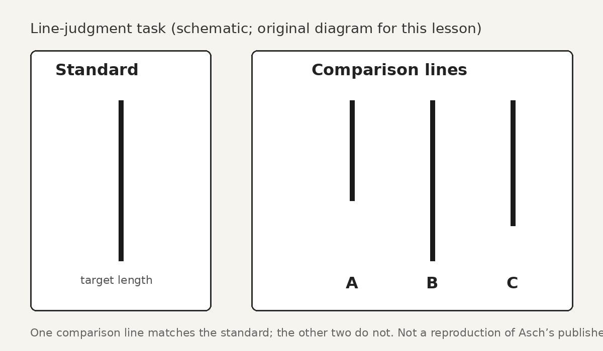
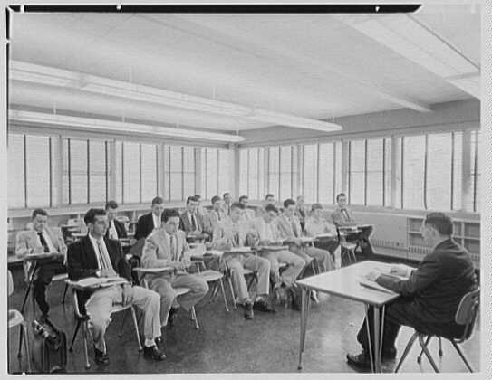

Sunday · Psych / soc
: the concept, then ’s line judgments at Swarthmore in the 1950s
What means — changing judgment or behavior toward a group norm when private evidence points elsewhere — then ’s line-judgment experiments with male college students, a unanimous wrong majority, and the stubborn fact of .

{kind=link}
This lesson presents as a concept first, then ’s line-judgment experiments as a case study. The core numbers follow ’s own reports: about one-third of responses on matched the wrong majority; roughly three-quarters of participants conformed at least once; about one-quarter never conformed; alone, error rates were near zero. framed the work as . Textbooks often overstate and understate ( 1990; later reviews). The samples were mostly young men in American colleges; the task was an artificial lab judgment; deception was used; cultural and historical replications vary. This is a mechanism under specific conditions, not a universal law of human weakness.
Select any words, or tap a dotted term.
- 1935 Sherif’s autokinetic work studied how people form norms when judging an ambiguous moving light. later asked what happens when the physical evidence is clear and the group is still wrong.
- 1951 First published report published “Effects of group pressure upon the modification and distortion of judgments” in ’s . The line-judgment paradigm was on the record.
- 1952 Social Psychology textbook ’s Social Psychology (Prentice-Hall) set out his broader Gestalt-influenced view of social influence, with as a serious research problem alongside .
- 1955 Scientific American “” summarized the program for a wide audience. The same year, published a different apparatus in , and distinguished normative from .
- 1956 The monograph Psychological Monographs published “: I. A minority of one against a ,” the fullest report of methods, numbers, variations, and interviews.
- 1960s Obedience as a different question ’s studies, shaped in part by ’s questions about social pressure, asked what people do under authority commands — a different mechanism from peer-majority .
- 1990 Textbook critique documented how social-psychology textbooks increasingly exaggerated and neglected ’s emphasis on .
- 1996 Bond and Smith meta-analysis and meta-analyzed 133 Asch-type line-judgment studies from 17 countries. varied by culture and had declined in U.S. samples since the 1950s.
The concept
What conformity means: moving toward the group when your own evidence says otherwise
is a change in judgment or behavior toward a group norm, even when private evidence points elsewhere. The person sees one thing, hears the group say another, and then moves — in speech, in writing, or in action — toward the group. The move can be thin or deep. Sometimes it is only: the person still knows the group is wrong and goes along to avoid standing out. Sometimes it involves real doubt: the person begins to treat others’ answers as information about what is true. Either way, the defining feature is the shift toward the group against the pull of one’s own evidence.
Social psychologists usually split the pressure into two kinds. is the wish for acceptance and the fear of rejection. is the use of other people as evidence when the world is unclear. Morton Deutsch and Harold Gerard named that distinction in 1955, the same year summarized his line experiments for . The two mechanisms are not mutually exclusive. A task can be clear and still produce doubt once a roomful of peers disagrees. But the distinction matters for reading any study. If the physical answer is ambiguous, has more room to work. If the answer is obvious, normative pressure is doing more of the lifting — and any informational doubt that appears is itself a product of the social conflict.
belongs in the definition as much as does. did not set out to prove that “everyone caves.” He set out to measure when people hold to what they see and when they do not. Later textbooks often flattened that program into a morality play about human weakness. The concept, stated carefully, is narrower and more useful: under specified group conditions, some people some of the time will match a wrong majority; many responses will still be independent; and small changes in the group — especially a break in unanimity — can change the rate dramatically. That is the claim. The line-judgment case puts it on the ground.
The mechanism
How Asch built a minority of one against a unanimous majority
, working at in the early 1950s, wanted a situation in which the physical evidence was clear and the social evidence was wrong. Earlier work by had used the — a stationary point of light that seems to move in a dark room — to show how groups form norms when reality is ambiguous. flipped the problem. He gave people a line-matching task so easy that, alone, they almost never erred. Then he placed one among confederates who, on , unanimously chose the wrong comparison line.

The classic series used 18 trials. On 12 of them — the — the confederates all gave the same wrong answer. The answered near last, after hearing the majority. Early reports described groups of roughly seven to nine men; the 1955 summary reported results from 123 male students at three colleges ( noted that series did not include his own Swarthmore sample). Control participants judging alone made mistakes less than about one percent of the time. Under group pressure, about one-third of the responses on matched the wrong majority. Roughly three-quarters of participants conformed at least once. About one-quarter never conformed on any . Those are ’s own orders of magnitude; later popular retellings sometimes inflate them.

Variations showed what drove the effect. Majority size mattered up to a point: one opposing produced little ; two or three raised it sharply; adding still more did not keep multiplying the rate. A single dissenting who gave the correct answer cut dramatically — toward about five percent in ’s reports. Private written answers reduced public . Post-experiment interviews sorted motives. Some participants said they knew they were wrong and went along anyway (). Some said they came to doubt their eyes (). A smaller number seemed to accept the majority’s line as matching (). The interviews are why refused a single story about “the conforming subject.” People arrived at the same wrong answer by different routes — and many never arrived there at all.
The case
Swarthmore, male college students, and the wrong line said out loud
Picture the cover story as the participants heard it. Young men are recruited for what seems to be a study of visual discrimination. They sit in a classroom with several others. Cards appear: a standard line, then three comparison lines labeled for easy calling. Each man announces his match in seat order. The first trials are ordinary. Everyone agrees. Then, on a , the men ahead of the all pick a line that is clearly wrong. The discrepancy is not subtle. Alone, the same participant would almost never make that error. Now he has to speak after a unanimous wrong majority has already spoken.
{kind=link}
What happened next varied by person, which is the point wanted recorded. Some participants stuck with what they saw on every . Some yielded once or twice and then recovered. Some yielded often. Across the pooled , wrong majority-matching answers ran at about one-third. That headline number is real and surprising. It is also incomplete. Most answers were still correct. A substantial minority of people never yielded. And when planted one ally who said the correct line, the social situation changed enough that collapsed for many who would otherwise have gone along. The case is not “college students cannot trust their eyes.” The case is “a unanimous peer majority can pull a measurable share of public answers off an easy truth — and remains common, especially once unanimity breaks.”

The same decade’s social psychology was already linking group presence to individual judgment in other ways. The bystander-effect literature still lay ahead, but the shared problem is recognizable: other people change what a person feels responsible for saying or doing. Cognitive-dissonance fieldwork from the same years showed another group mechanism — helping people hold a belief after disconfirmation. ’s contribution sits beside those findings without being identical to them. His question was peer judgment on a clear fact. Festinger’s Seekers case asked how commitment and fellow believers reshape a failed prophecy. Later bystander experiments asked how the presence of others inhibits helping. All three are about social pressure and group conditions. Only ’s design put a minority of one against a scripted on a line length anyone could see.
published the program in stages: a 1951 chapter in Guetzkow’s ; discussion in his 1952 Social Psychology; the 1955 essay “”; and the 1956 Psychological Monographs report with the fullest tables and interviews. He kept returning to a double finding. The capacity to call white black under group pressure was, in his words, a matter of concern. The capacity for under the same pressure was also real, often costly, and scientifically central. Any honest case study has to carry both sentences.
Contemporaneous elsewhere
Crutchfield’s booths and lights, 1955
While was refining the live-confederate line paradigm, at Berkeley published a different apparatus in in 1955 under the title “ and character.” Instead of seating one among a roomful of trained actors, placed several naive participants in separate cubicles. Each faced a panel of signal lights supposedly showing the other participants’ answers. In reality the experimenter controlled the lights and could display a false . Participants believed they were answering last. Multiple people could be tested in one session, with no live confederates to train and schedule.
still found substantial , including on tasks beyond simple line matching. His design answered a practical criticism of : live majorities are expensive and hard to standardize. It also changed the social texture. ’s participants spoke aloud under the eyes of peers; ’s sat alone with lights. Later commentators noted that public embarrassment may have been stronger in ’s room. The comparison is useful because it is contemporaneous and methodological, not a forced East-West parable. Two American labs in the mid-1950s asked how a person responds when the group — real or simulated — is unanimously wrong. kept the human majority visible. automated the majority and multiplied throughput. Both belong to the same research moment.
After
Replications, culture, textbook myths, and the road to obedience research
The paradigm replicated often enough to become a teaching staple, but the size of the effect is not a constant. In 1996, and published a meta-analysis of 133 studies using Asch-type tasks, drawn from 17 countries. was generally higher in more collectivist cultural contexts than in more individualist ones. Within the United States, effect sizes declined from the 1950s onward. Those findings do not erase ; they locate him. A 1950s American male college sample under a unanimous wrong majority is one estimate, not the human average for all places and decades.
Textbook culture often moved the other way — toward a simpler story. argued in 1990 that social-psychology texts increasingly accentuated and minimized , despite ’s own framing and interview evidence. Later reviews found the distortion persistent: many texts still under-report that most critical-trial answers were independent and that a sizable minority never yielded. The popular lesson became “people are sheep.” ’s lesson was closer to “unanimous majorities can move public judgment on clear facts, is common, and one ally matters.” Teaching the second version takes a few more sentences. It is also more accurate.
Limits remain binding. The classic samples were young men in colleges. The task was a brief lab judgment with no material stake. Confederates and cover stories meant deception. Cultural scripts about disagreement differ. Modern replications sometimes change incentives, gender composition, or political opinion items; a 2023 open-access study by Axel Franzen and Sebastian Mader still found an error rate near one-third in a standard line condition, while also showing that incentives and item type can shift rates. The paradigm shaped social psychology by giving researchers a clean way to manipulate majority pressure. It does not license claims about every committee, classroom, or nation.
’s questions also fed a neighboring research line. , who had worked in settings influenced by ’s concerns, asked what people do when an authority figure commands harmful action. That is , not peer-majority . The mechanisms differ: a white-coated experimenter giving orders is not the same as six peers mis-matching a line. Still, both programs made situational social pressure measurable, and both are easy to over-moralize. Keep them adjacent, not collapsed. measured how a unanimous peer majority pulls answers on a clear fact. measured how authority commands pull action. The shared inheritance is a research style. The questions are not the same.
A question
A question to keep asking
If a unanimous group is clearly wrong about something you can see for yourself, what would it take — one ally, a chance to answer privately, a higher cost for being wrong, a different culture of disagreement — for you to trust your own evidence out loud, and how would you know whether you were showing or only a different kind of social influence?
Fun fact
One ally was enough to break the spell
found that a unanimous wrong majority was doing most of the work. When he instructed even one to give the correct answer on the , by the fell sharply — in his reports, from roughly a third of critical-trial responses down toward about five percent. The participant did not need a majority of allies. One person saying the obvious out loud changed the situation. That is why kept insisting the studies were about as well as : the same people who yielded to unanimity often stood firm once unanimity cracked.